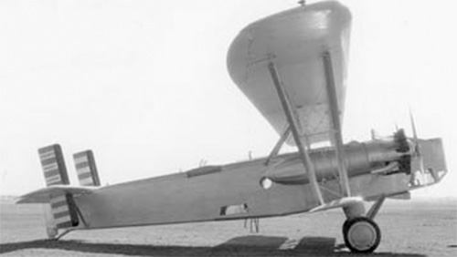

S-37B

- Разработчик: Sikorsky
- Страна: США
- Первый полет: 1927
- Тип: Бомбардировщик
В 1927 году фирма Sikorsky получила заказ от компании Consolidated Co на создание легкого бомбардировщика для Армии США.
В этом же году был изготовлен один экземпляр самолета под обозначением S-37-B (или S-37B), созданный на базе транспортного
Sikorsky S-37. От своего предшественника он отличался 525-сильными двигателями Pratt & Whitney R-1690.
После передачи заказчику обозначение сменили на Consolidated Model 11 Guardian. Этот самолет был передан военным, где
прошел испытания под временным индексом XP-496, в связи с отрицательной оценкой армейского обозначения ему так и не
было присвоено.
После неудачи с бомбардировщиком, в 1929 году машину вновь переделали в транспортный 21-местный самолет с двумя двигателями
Pratt & Whitney Hornet мощностью 675 л.с. Самолет, переобозначенный как S-37-2, получил гражданский регистрационный
номер NR942M. Последний его вылет состоялся в 1934 году.
| Летно технические характеристики | |
|---|---|
| Модификация | S-37B |
| Размах крыла, м | 30.50 |
| Длина, м | 13.87 |
| Высота, м | 4.93 |
| Масса, кг | |
| - пустого самолета | 3990 |
| - нормальная взлетная | 6853 |
| Тип двигателя | 2 ПД Pratt & Whitney R-1690 |
| Мощность, л.с. | 2 х 525 |
| Максимальная скорость , км/ч | 225 |
| Крейсерская скорость , км/ч | 185 |
| Практическая дальность, км | 925 |
| Боевая дальность, км | |
| Максимальная скороподъемность, м/мин | |
| Практический потолок, м | 3900 |
| Экипаж, чел | 5 |
| Вооружение: | пять 7.62-мм пулеметов 885 кг бомб |